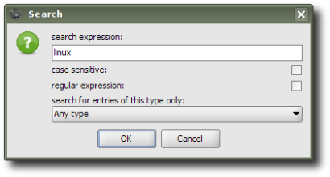
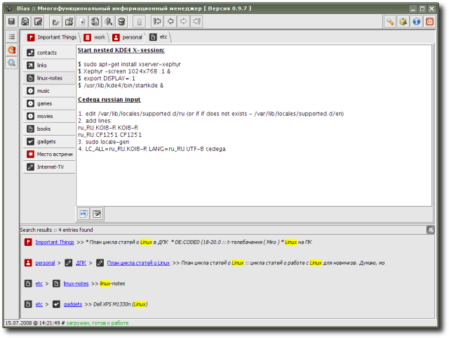

SimpleSearch - search tool; allows to search for occurrences of given text block (optionally, case-sensitively) or to search using regular expressions (there's even syntax checking for latter ones); besides of that, it's possible to search by specified data-entry type only; results are given in form of "paths" to entries found, that contains both titles and icons of these entries, by clicking on which switching to corresponding entry is performed; for even more usability, occurrences are highlighted.
Extension is provided by R. Kasianenko, an author of Bias application.
Preview:

